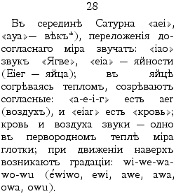
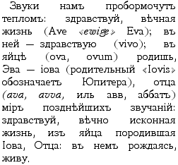
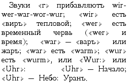
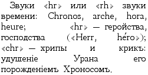

Glossolalia (Section 28)

In the center of Saturn is "aei"; "aya" is a -- century*; rearrangements of the pre-consonant world sound like: "iao" the sound "Yahweh"; "eia" is -- ovarian (Eier -- æggs [yaytsa]); inside the egg being heated by the warmth, the consonants are ripening: "a-e-i-r" is aer (air); and "eiar" is "blood"; blood and the sounds of air are -- one in the primogenital warmth of the world of the throat; gradations emerge by an upward movement: wi-we-wa-wo-wu (éwiwo, ewi, awe, awa, owa, owu).

The sounds mutter warmth to us: hail, æternal life (Ave "ewige" Eva); in her -- I am alive (vivo); in the ægg (ova, ovum) you give birth, Eve -- to Jove [iove] (the genitive case of "Iovis" signifies Jupiter), to the father (ava, avva, or avv, abbat), the world of much latter sounds is: hail, æternally age-old life, which from the aegg gave birth to Jove, to the Father: as I am born in him, I live.


* In Sanskrit.